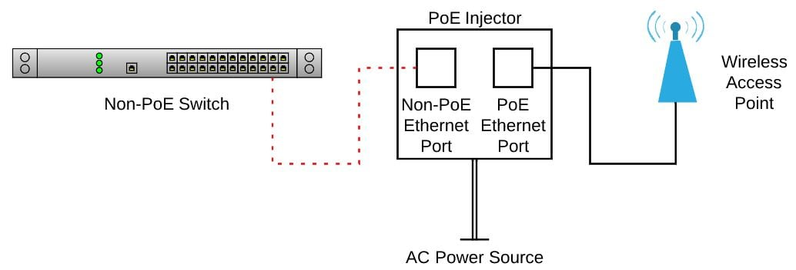

Power-over-Ethernet (PoE) sends DC power and network data through the same Ethernet cable. A PoE link has two sides: power sourcing equipment (PSE), such as a PoE switch or Ethernet injector, and a powered device (PD), which receives that power. This board is my PD-side dev board for learning wired networking, high-speed PCB layout, PoE front-end design, and register-level Ethernet firmware. This revision focuses on receiving PoE power and bringing up the W5500; a future revision will use a switching power stage.

Click the sheet to open it full size.
| Subsystem | Implementation |
|---|---|
| PoE input | PoE-compatible RJ45 MagJack routes Ethernet data to the W5500 and PoE voltage nodes to bridge rectifiers. |
| Power conversion | Bridge-rectified PoE input feeds an isolated Silvertel PoE PD module to generate the board supply rail. |
| Ethernet controller | W5500 provides the hardwired TCP/IP Ethernet interface and communicates with the ESP32 over SPI. |
| Digital control | ESP32 controls chip select, reset, interrupt handling, and packet-level application firmware. |
| Debug access | Breakout/test access is planned for SPI, reset, interrupt, 3.3 V, ground, and PoE power rails. |